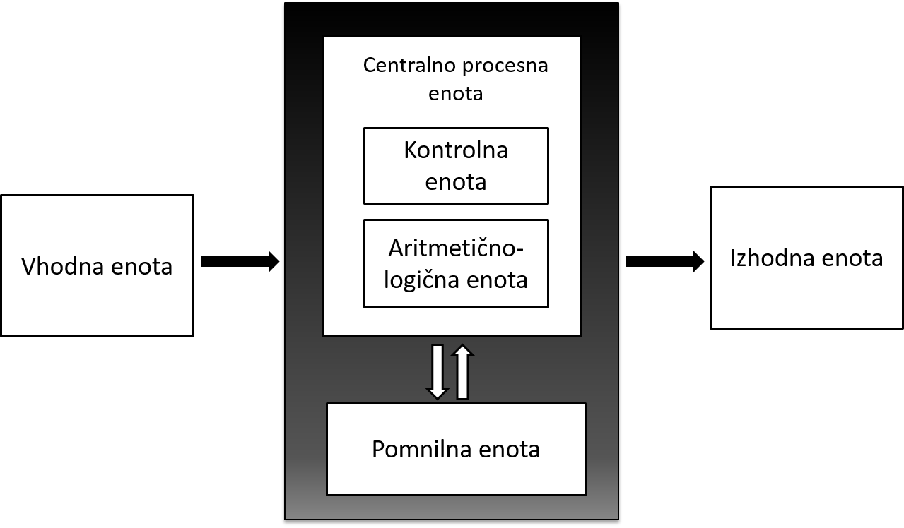

Velika večina današnjih računalnikov deluje po principu von Neumannovega modela računalnika, pri čemer so glavni trije gradniki te arhitekture centralno procesna enota, pomnilnik ter vhodno-izhodni sistem. Predstavitev in delitev le-teh najdete na povezavi strojna oprema.
Enostaven opis delovanja običajnega računalnika po korakih:
Krmilna enota prebere strojni ukaz (ukaz, ki je zapisan v strojnem jeziku) iz pomnilnika z lokacije oz. naslova, na katerega pokaže programski števec (PC). To je eden od registrov v centralno procesni enoti, ki hrani naslov naslednjega ukaza, ki naj se izvede.
Ukaz se nato prenese v procesor, kjer se začne dekodiranje. To je postopek, s katerim se iz ukaza ugotavlja, kakšna operacija naj se izvede v aritmetično-logični enoti in kje so operandi, nad katerimi naj se ukaz izvrši. Ti so običajno v registrih, če pa ne, jih dobimo iz pomnilnika ali vhodno-izhodne enote.
Pripravljeni operandi se prenesejo na vhod aritmetično-logične enote, ki nad njimi izvede zahtevano operacijo. Na koncu se rezultat operacije shrani bodisi v notranje registre bodisi v pomnilnik ali na vhodno-izhodno enoto.
Ko se nek ukaz izvrši, se takoj zatem začne branje novega ukaza, katerega naslov je hranil programski števec že takrat, ko je pokazal na predhodni ukaz, zato je delovanje računalnika zaporedno delovanje (oznaka PC = PC + 1).
Pri delovanju računalnika velja omeniti še vodila, ki so pomemben sestavni del računalnika, saj povezujejo osnovne gradnike von Neumannove arhitekture.
Naslovno vodilo je del računalniškega vodila, ki naslavlja lokacije v pomnilniku, s katerih centralno procesna enota zajema ukaze in podatke ali pa le-te na te lokacije vpisuje. Koliko lokacij v pomnilniku lahko centralno procesna enota naslovi, je odvisno od širine naslovnega vodila.
Podatkovno vodilo je namenjeno prenosu podatkov med centralno procesno enoto, pomnilnikom in vhodno-izhodnimi napravami. Njihovo število je enako največjemu številu bitov, ki se prenašajo naenkrat. To število imenujemo širina prenosne poti.
Kontrolno vodilo je del računalniškega vodila, preko katerega centralno procesna enota komunicira z drugimi napravami. Signali tega vodila določajo smer prenosa (branje ali pisanje), število prenešenih bitov in časovno zaporedje dogodkov med prenosom.